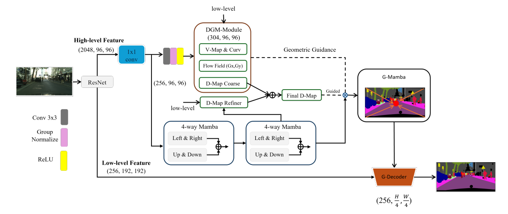

In short重點
Sequence models scan an image in a fixed raster order that has nothing to do with where objects actually are. DGM-Net predicts geometric fields from the features and uses them to steer the scan, reaching 80.8% mIoU on Cityscapes with 53M parameters and retaining 79.8% under an 8 GB memory budget.
序列模型以固定的光柵順序掃描影像，而這個順序跟物件實際的位置毫無關係。DGM-Net 從特徵中預測幾何場，並以此引導掃描路徑，在 Cityscapes 上以 53M 參數達到 80.8% mIoU，在 8 GB 記憶體限制下仍維持 79.8%。
The problem問題
High-accuracy segmentation has largely been bought with bigger backbones and bigger GPUs. Transformers model global context well, but self-attention costs O(N²) in the number of pixels, which becomes punishing at 1024 × 1024 and above.
State space models like Mamba offer the same global reach at O(N). But visual SSMs scan in fixed, isotropic patterns that are agnostic to image structure. Information diffuses across object boundaries — semantic leakage — and thin structures such as poles and fences get smoothed away.
高準確度的分割，長期以來是靠更大的骨幹網路與更大的顯卡換來的。Transformer 能有效建模全域上下文， 但自注意力的成本隨像素數呈 O(N²) 成長，在 1024 × 1024 以上的解析度代價極高。
Mamba 這類狀態空間模型能以 O(N) 提供同樣的全域視野，但視覺 SSM 採用的是固定且各向同性的掃描模式， 完全不理會影像本身的結構。結果是資訊跨越物件邊界擴散——也就是語義洩漏——而電線桿、柵欄這類細長結構 則被平滑掉。
The idea作法
If the scan is going to be sequential anyway, it should follow the geometry of the scene rather than the geometry of the pixel grid. The DGM-Module predicts four geometric priors directly from the features:
- V-map — a centripetal potential field indicating distance to object centres.
- Flow field Φ — first-derivative gradients of the V-map, pointing toward centroids.
- Curv-map — Laplacian-based anchors marking corners and junctions.
- D-map — a morphological prior focused on the skeletons of slender structures.
These become a soft geometric prompt that reweights the features before the selective scan, so recurrent state concentrates on structurally critical regions instead of spreading evenly. The context head is a three-layer Cascade G-Mamba: the first two layers scan four ways to establish what is in the scene, and the third applies geometric navigation to settle where the boundaries are. A GOAD decoder then warps low-level features along the predicted flow to fix the misalignment that normally blurs upsampled boundaries. The G-Mamba operator introduced here is examined on its own in a separate transfer study.
既然掃描終究是循序的，那它就應該依循場景的幾何，而不是像素網格的幾何。 DGM-Module 直接從特徵預測四種幾何先驗：
- V-map——向心位能場，表示各點到物件中心的距離。
- Flow field Φ——V-map 的一階導數梯度，指向物件重心。
- Curv-map——基於拉普拉斯運算的結構錨點，標記轉角與交界。
- D-map——形態學先驗，聚焦於細長結構的骨架。
這些先驗會組成一個柔性的幾何提示，在選擇性掃描之前重新加權特徵， 讓遞迴狀態集中在結構關鍵的區域，而不是平均分散。上下文模組是三層的 Cascade G-Mamba： 前兩層做四方向掃描，先確立場景中有什麼；第三層才施加幾何導航，判斷邊界在哪裡。 接著 GOAD 解碼器沿著預測的流場對低階特徵做扭曲對齊，修正上採樣通常會造成的邊界模糊。 本文提出的 G-Mamba 運算子，另有一篇獨立的遷移分析單獨檢驗其效果。
Results實驗結果
| Model | Params | GFLOPs | mIoU (SS) |
|---|---|---|---|
| DeepLabV3+ | 84.74 | 348.0 | 79.55 |
| OCRNet | 70.41 | 325.0 | 81.8 |
| DANet | 66.47 | 289.0 | 78.8 |
| CCNet | 66.13 | 276.0 | 80.5 |
| DGM-Net (ours) | 53.00 | 224.1 | 80.8 |
| 模型 | 參數量 | GFLOPs | mIoU（單尺度） |
|---|---|---|---|
| DeepLabV3+ | 84.74 | 348.0 | 79.55 |
| OCRNet | 70.41 | 325.0 | 81.8 |
| DANet | 66.47 | 289.0 | 78.8 |
| CCNet | 66.13 | 276.0 | 80.5 |
| DGM-Net (ours) | 53.00 | 224.1 | 80.8 |
With multi-scale testing the same model reaches 82.3% mIoU, and it transfers to ADE20K at 45.24% mIoU using the identical configuration — no dataset-specific tuning of the geometric priors.
在多尺度測試下，同一個模型可達 82.3% mIoU；沿用完全相同的設定遷移到 ADE20K 時為 45.24% mIoU——幾何先驗沒有針對資料集另做調整。
| Model | Max crop | Batch | mIoU |
|---|---|---|---|
| DeepLabV3+ | 641×641 | 2 | 77.43 |
| PSPNet | 641×641 | 2 | 77.31 |
| DGM-Net (ours) | 768×768 | 2 | 79.8 |
| 模型 | 最大裁切 | Batch | mIoU |
|---|---|---|---|
| DeepLabV3+ | 641×641 | 2 | 77.43 |
| PSPNet | 641×641 | 2 | 77.31 |
| DGM-Net (ours) | 768×768 | 2 | 79.8 |
This is the result the title refers to. Linear memory complexity lets DGM-Net keep a 768×768 crop where attention-based heads have to drop to 641×641 to avoid running out of memory, so it sees more context and scores higher on hardware typical of a single-GPU lab.
這正是論文標題所指的結果。線性的記憶體複雜度讓 DGM-Net 能維持 768×768 的裁切尺寸，而基於注意力的上下文模組必須降到 641×641 才不會爆記憶體——因此 DGM-Net 看到更多上下文，並在單卡實驗室常見的硬體上取得更高的分數。
What each part contributes各模組的貢獻
| Configuration | mIoU | Gain |
|---|---|---|
| Baseline (ResNet-101) | 74.20 | — |
| + DGM-Module | 77.50 | +3.30 |
| + Standard Mamba | 79.45 | +1.95 |
| + G-Mamba (single) | 80.11 | +0.66 |
| + Cascade G-Mamba | 80.80 | +0.69 |
| + Multi-scale testing | 82.30 | +1.50 |
| 設定 | mIoU | 增益 |
|---|---|---|
| Baseline (ResNet-101) | 74.20 | — |
| + DGM-Module | 77.50 | +3.30 |
| + Standard Mamba | 79.45 | +1.95 |
| + G-Mamba (single) | 80.11 | +0.66 |
| + Cascade G-Mamba | 80.80 | +0.69 |
| + Multi-scale testing | 82.30 | +1.50 |
Where the gains land增益落在哪裡
Extending training from 28k to 90k iterations does not improve every class evenly. The largest gains show up exactly where the architecture was aimed: wall (+2.50), fence (+1.87), pole (+1.20), traffic light (+1.09) — thin, boundary-sensitive structures — while road and sky barely move.
The complexity curve also stays flat. At 1024 × 2048, DGM-Net needs 1,792 GFLOPs against OCRNet's 2,342, a 23.5% reduction, and inference runs at 53.5 FPS at 1024 × 1024 on an RTX 5080.
把訓練從 28k 迭代延長到 90k，各類別的進步幅度並不平均。增益最大的地方，恰好就是這個架構瞄準的地方： 牆面（+2.50）、柵欄（+1.87）、電線桿（+1.20）、紅綠燈（+1.09）——都是細長且對邊界敏感的結構—— 而道路與天空幾乎沒有變化。
複雜度曲線也維持平緩。在 1024 × 2048 解析度下，DGM-Net 需要 1,792 GFLOPs， 相對於 OCRNet 的 2,342 減少了 23.5%；在 RTX 5080 上，1024 × 1024 的推論速度為 53.5 FPS。
Limitations限制
The centripetal flow field assumes objects have well-defined geometric centres, so it helps less on large “stuff” regions like sky, road, and vegetation. SSM aggregation also retains an intrinsic smoothing behaviour, so extremely sparse high-frequency detail is still hard. And because the model is trained without large-scale segmentation pretraining, how far it scales in a big-data regime remains open.
向心流場假設物件具有明確的幾何中心，因此在天空、道路、植被這類大面積的「stuff」區域幫助較小。SSM 的聚合本身也保有平滑化的傾向，所以極度稀疏的高頻細節仍然難以處理。此外，由於模型並未使用大規模分割預訓練，它在大數據條件下能擴展到什麼程度，仍是未知數。